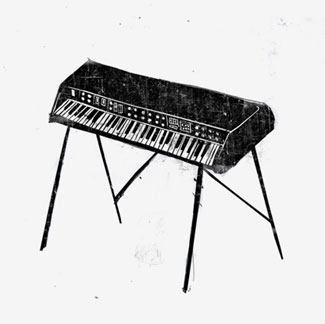
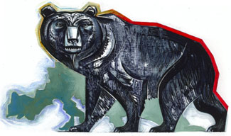
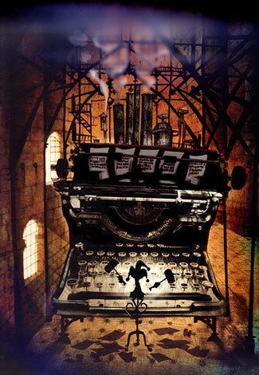
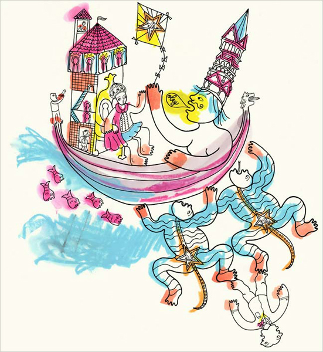
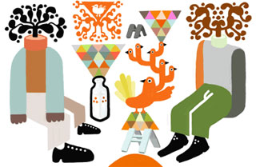
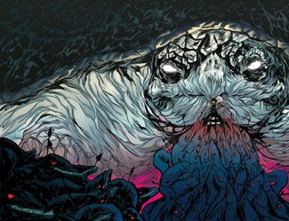
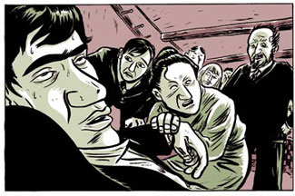
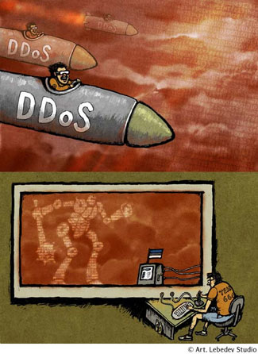
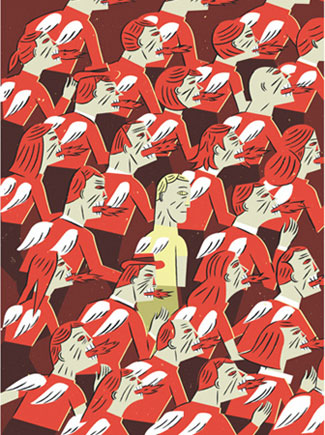
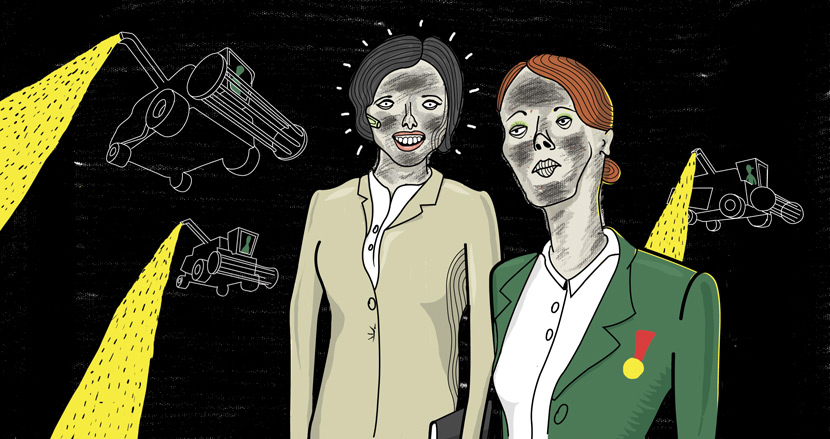

РАЗГРУЗОЧНЫЙ ДЕНЬ
Из накопившегося
Много накопилось ссылок, которые не знаю, к чему бы пришить. Буду себе позволять раз в месяц, если не возражаете.

Старомодно, но мощно:

Harley Jessup и его фильм "twice upon a time"


Все-таки нарочитая кривота выигрывает только в сочетании с каким-то ребяческим старанием. Неплохо вдобавок быть девушкой, и уметь мило улыбаться.


Над этой работой я полдня просидел в глубоком ступоре.
Вообще, вот сюда рекомендую заглянуть.
Там еще обитает Ник Бертоцци:

И ложка дегтя напоследок.
Чем, среди прочего, хороша бумага — что на ней даже срисованные ноль в ноль детали при любой технологии засчет мелких нюансов выглядят по-разному. Одинаковые детали сами по себе небольшое зло, но вот клонированные — это другое дело, и тут я смолчать не могу. Нет, ладно какой-то там М.Яровиков, но ты, Камаев! Король гелевой ручки! Наследник Залтковского и прочих! Ну что ж это такое-то?! Какой пример ты подаешь сотням юных иллюстраторов, ежедневно посещающих design.ru? Эх!
То есть я все понимаю, времени нет, а клиент ноет — но это ведь все до дедлайна. Вывешивать работу на сайт можно еще месяц-другой, и у Студии наверняка найдется на этот месяц что-нибудь еще.


Найди двух одинаковых.
Не серчайте, коллеги, но в наших краях девять из десяти иллюстраторов нарисовали бы один раз и успокоились бы. Потому, Лень.

Долой Лень.